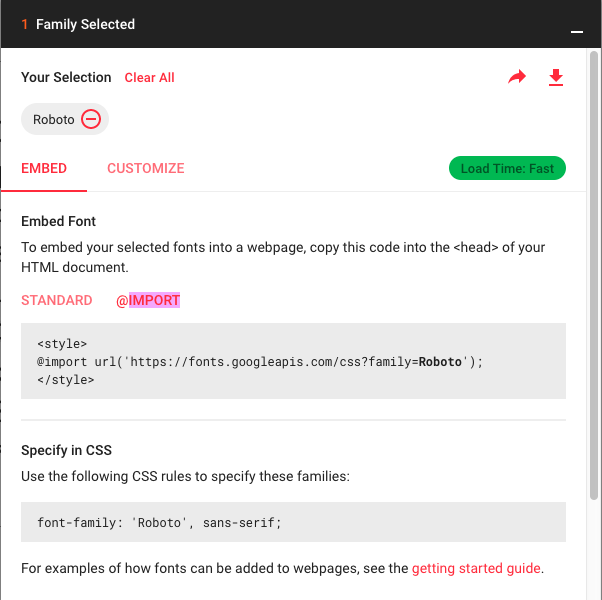

Typographic hierarchy is an important concept for developing the typographic styles for a web page.
A typographic hierarchy helps the client or user understand how the information on the page is organized, what the most important information is and how to read the page.
Let's review some basics in terms of what’s available with web typography.
Legibility is also important.
We will focus on pairing fonts for this week.
We’ll talk a bit about responsive typography and fluid type, or designing for different screen sizes.
We're going to use Google Fonts as a starting point for creating a typographic hierarchy.
To use a font on your website, choose a font by clicking "Select this font" and then open the window that appears, go to the "Embed" section and copy the "@import" CSS rule to your CSS style sheet. You don't need the style tags.
You can also copy the generated style rule to use in the stylesheet.
Google Fonts are free and they have nice tools for testing out font pairs right in the browser.